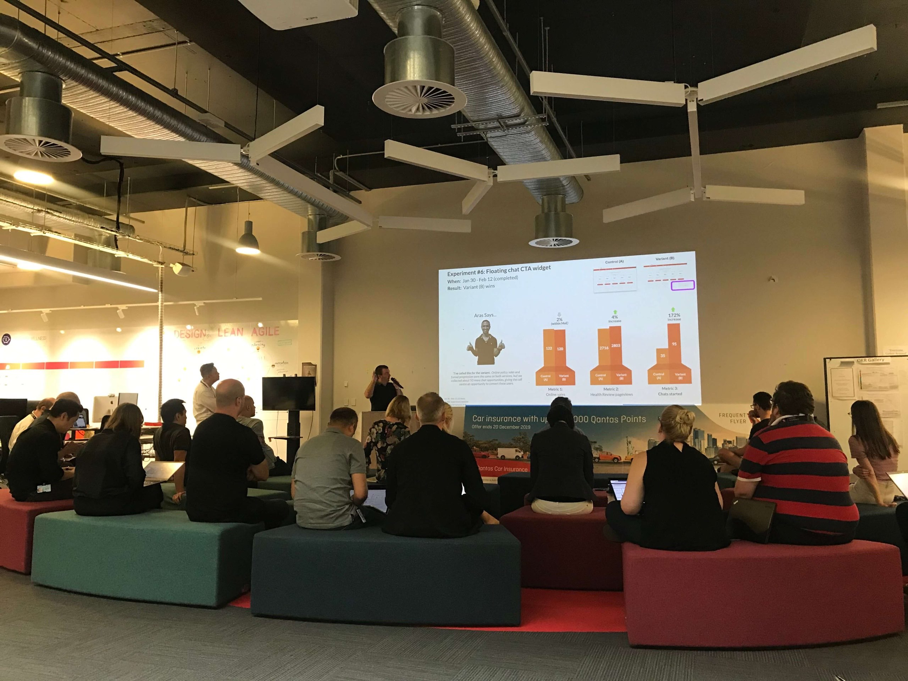
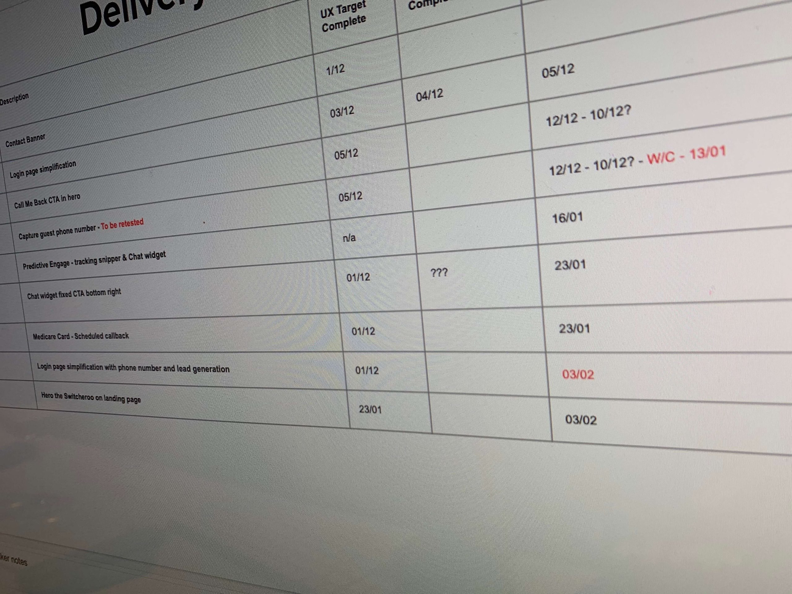
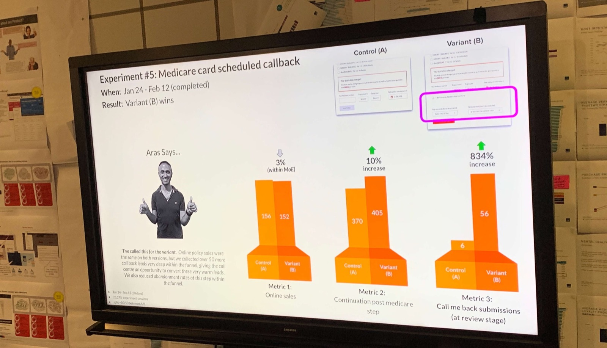
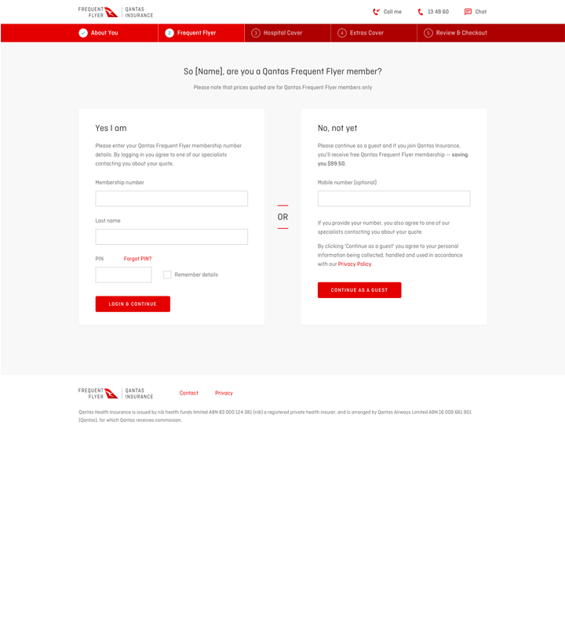

$1.02m new revenue.
The target was $500k. We doubled it.
Qantas Ventures is part of Qantas Loyalty — the largest loyalty program in the world with around 14 million members. Their partnership with nib to offer Health Insurance had become the fastest growing health fund in Australia, but the digital application funnel was underperforming. Members who spoke to the Sales & Engagement team were four times more likely to convert, so the brief was clear: optimise the funnel to drive more leads to the call centre.
I was engaged as both Senior Experience Designer and CRO specialist for a time-boxed 6-month engagement. The business plan target was $0.5m first-year EBIT. I designed and ran 12 experiments, each one grounded in analytics, tested with real traffic, and measured against hard revenue metrics. No wireframes handed to a dev team — I designed it, built it, tested it and iterated on it.

Staying focused on what matters
The hardest part was maintaining focus. There was no shortage of ideas, but the remit was specific: drive lead traffic to the S&E team. It would have been easy to chase digital enhancements that increased online sales, but that wasn’t the goal. I scored every candidate against two criteria: would it increase calls to S&E, and could I build and measure it within a two-week window? Anything that didn’t pass both filters got parked — regardless of how good it looked on paper.
My first experiment moved contact information from the header — where people are susceptible to banner blindness — into a prominent banner below the hero with compelling iconography. The hypothesis was simple: increase affordance, increase leads.

Making results impossible to ignore
This was high-profile work. It required sign-off from Olivia Wirth (CEO, Loyalty) and Alan Joyce (CEO, Qantas Airways). A totally new way of running a project at Ventures — self-contained, against all normal BAU ways of working.
I created a digital results wall in the main thoroughfare of the floor, showing experiments in flight and results as they were called. I gamified the process — inspired by how Antony Green calls election results on the ABC, I had our analytics expert Aravind be the one to officially call each experiment. Bar charts updated daily from Google Optimize. It became the thing people talked about. Visibility built momentum, and momentum built trust.

The experiment that took four attempts to win
Simplify the login screen, reduce cognitive load, more people progress through the funnel. Should have been the quickest win. The existing layout had a login box on the left and ‘continue as guest’ on the right — both looked identical, and we were losing 50% of users at this point.
I made it single column, reduced the affordance of the guest flow, and added messaging about why logging in would save time. And it didn’t work. Three more iterations also didn’t. But this experiment taught us the most:
On the fourth attempt — single column, minimal text, ‘Login to see your quote’ — sales increased 32%. That one experiment alone generated $254k lifetime EBIT.
11 out of 12 experiments won
The business plan target was $0.5m annual EBIT and $1m lifetime. With 4.5 months of real experimentation time, we blew it out of the water: $1.01m annual and $2.1m lifetime EBIT across the 12 experiments. 11 of 12 were successful — including login simplification at the fourth time of asking.
Data-driven design that moves revenue
This wasn’t about making things prettier. Every experiment was grounded in analytics, tested against real traffic, and measured on hard metrics. The ability to design, build, and ship at speed — without waiting for handoff cycles — meant we could compound learnings across 12 experiments in under 5 months. That’s what happens when the designer is also the builder.